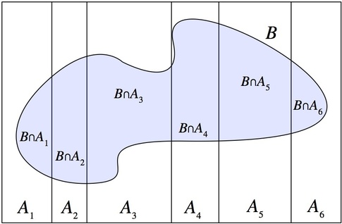

class: inverse, middle, center # More fun with <br> Conditional Probability --- # Conditional Probability .left-column[ ## Review ] .right-column[ ## Conditional Probability Recall that conditional probability *introduces information* It does so by reducing the sample space.red[*] $$P(A \| B) = \frac{P(A, B)}{P(B)}$$ But not all information is useful + $A$: "There is hard conditional probability question in the midterm" + $B$: "Donald Trump is elected president of the US" $$P(A | B) \ = \ $$ .footnote[.red[*] I'll write $P(A,B)$ to mean $P(A \cap B)$] ] --- # Conditional Probability .left-column[ ## Review ## Factorization ] .right-column[ ## Independence When information doesn't flow from one event to the other, we say that they are *independent*. In the exam question / US president example: $$P(A | B) = P(A)$$ ## Factorization property Independent events *factorize*: $$P(A) = P(A | B) = \frac{P(A, B)}{P(B)} \ \ \Rightarrow \ \ P(A)P(B) = P(A,B) $$ ] --- # Conditional Probability .left-column[ ## Review ## Factorization ## Decomposition ] .right-column[ ## Chain rule Actually, even when event are not independent, it's useful to know what is sometimes called the *chain rule*: $$P(A,B) = P(A|B)P(B)$$ <br> Also makes sense when we think of probability tables .center[<img src = "cpt.png", height = 100>] First condition on column, then row. Or vice-versa. ] --- # Conditional Probability .left-column[ ## Review ## Factorization ## Decomposition ## Symmetry ] .right-column[ ## A symmetric formula Recall that $$P(A | B) \neq P(B | A)$$ However, obviously $$P(B,A) = P(A,B)$$ So, using the chain rule on both sides $$P(A|B)P(B) = P(B|A)P(A)$$ <br> .center[*Pleasantly symmetric!*] ] --- # Conditional Probability .left-column[ ## Review ## Factorization ## Decomposition ## Symmetry ## LoTP ] .right-column[ ## Law of Total Probability  $$ P(B) = P(B \cap A_1) + \cdots + P(B \cap A_6) $$ .center[or] $$P(B) = P(B | A_1)P(A_1) + \cdots + P(B | A_6)P(A_6)$$ ] --- # Conditional Probability .left-column[ ## Seeing it ] .right-column[ ## Visualizing independence Independence is about relative *sizes* of events, not about them being *disjoint*! <figure> <img src="will-smith.jpg" alt="The Pulpit Rock" width="500"> <figcaption><font size=1>A picture of Will Smith trying to visualize independence</font></figcaption> </figure> ] --- # Conditional Probability .left-column[ ## Seeing it ] .right-column[ ## Visualizing independence Independence is about relative *sizes* of events, not about them being *disjoint*! <figure> <img src="dep.png", alt="independent events", width = 500> <figcaption><font size=3>These events are not independent. Ratios change.</font></figcaption> </figure> ] --- # Conditional Probability .left-column[ ## Seeing it ] .right-column[ ## Visualizing independence Independence is about relative *sizes* of events, not about them being *disjoint*! <figure> <img src="indep.png", alt="independent events", width=500> <figcaption><font size=3>These events are independent. Ratios remain the same.</font></figcaption> </figure> ] --- # Conditional Probability .left-column[ ## Seeing it ## Conditional Independence ] .right-column[ ## Conditional Independence Recall that for independent events: $$P(A|B) = P(A)$$ Even when two variables are not independent, they can become independent after conditioning on appropriate information: $$P(A|C, B) = P(A|C)$$ We say *$A$ is independent of $B$ conditionally on $C$* or *$A$ in independent of $B$ given $C$*. ] --- # Conditional Probability .left-column[ ## Seeing it ## Conditional Independence ## Examples ] .right-column[ ## Conditional Independence Toy example: $A$: Vitor is sick $B$: It is flu season $C$: Vitor has a cough, fever and muscle ache <br><br> $C$ "blocks" all the information in $B$. Now $B$ doesn't help us anymore. ] --- # Conditional Probability .left-column[ ## Seeing it ## Conditional Independence ## Examples ] .right-column[ ## Conditional Independence Econometrics example $A$: 6-figure wages at age 30 $B$: (Innate) Intelligence $C$: Education, family background, grades... <br><br> In econometrics people often assume: $$P(A|C) = P(A|B,C)$$ Whenever people talk about *controls*, people are actually talking about conditional independence! ] --- # Conditional Probability .left-column[ ## Seeing it ## Conditional Independence ## Examples ## Non-Implications ] .right-column[ ## Conditional independence does not imply independence... We've just seen some examples. More in your HWs [📓] ] --- # Conditional Probability .left-column[ ## Seeing it ## Conditional Independence ## Examples ## Non-Implications ] .right-column[ ## ...Neither does independence imply conditional independence Toy example 1: + $A$: First coin toss is Heads + $B$: Second coin toss is Heads + $C$: Sum of coin tosses is 1. $$P(A,B)=P(A)P(B)$$ but $$P(A,B|C) \neq P(A|C)P(B|C)$$ ] --- # Conditional Probability .left-column[ ## Seeing it ## Conditional Independence ## Examples ## Non-Implications ] .right-column[ ## ...Neither does independence imply conditional independence Suppose usually John and Paul live in different neighborhoods, take different means of transportation, etc. + $A$: John is late + $B$: Paul is late + $C$: John and Paul are coming together this time Other examples [📓] ] --- class: inverse, middle, center # In real life --- # Statistical Intuition .left-column[ ## Sally Clark ] .right-column[ ## Failure to understand independence .center[[Sally Clark's child murder case](https://en.wikipedia.org/wiki/Sally_Clark)] "[The prosecutor's] calculation was based on the assumption that two SIDS deaths in the same family are independent." It is true that: $$P(\text{Once death by SIDS}) = \frac{1}{8500}$$ So is it true that: $$P(\text{Two deaths by SIDS}) = \frac{1}{8500^{2}}$$ ] --- # Statistical Intuition .left-column[ ## Sally Clark ## 23andme ] .right-column[ ## Failure to understand Bayes Theorem 23andme is a company that offers direct-to-consumer saliva-based genetic testing .center[[News](http://www.pbs.org/newshour/rundown/23andme-returns-modified-fda-approved-genetic-tests/)] If you get a positive result for a rare disease in 23 and me, what is the probability of you *actually* having it? $$P(Disease) = \frac{1}{100}$$ $$P(Disease | +) = 0.95$$ $$P(No Disease | -) = 0.95$$ ] --- # Statistical Intuition .left-column[ ## Sally Clark ## 23andme ] .right-column[ .center[ Using your intuition <img src="medical.jpg", height=300> Using Bayes + LoTP <font size = 2> $$P(D | +) = \frac{P(+ | D)P(D)}{P(+)} = \frac{P(+ | D)P(D)}{P(+|D)P(D) + P(+|D^{C})P(D^{C})} = \frac{0.95 \cdot 0.01}{0.95\cdot 0.01 + 0.05\cdot 0.99} \approx 16\% $$ </font> ] ]